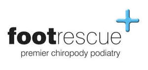

Trade Mark Journal No.2025/027 4 July 2025
UK00004222171 20 June 2025 (10,41,44)

- Class 10
- Footwear (Orthopaedic [orthopedic] -); Shoes (Orthopaedic [orthopedic] -); Soles (Orthopaedic [orthopedic] -); Orthopaedic [orthopedic] soles; Orthopaedic insoles; Insoles [orthopaedic]; Orthopaedic footwear; Insoles for footwear [orthopaedic]; Orthopaedic shoe insoles; Orthopedic insoles; Shoes (Orthopaedic -); Orthopedic footwear; Toe inserts for footwear [orthopaedic]; Orthopaedic soles; Insoles for orthopedic footwear; Orthopaedic bandages; Orthopaedic splints; Insoles for shoes [orthopaedic]; Insoles for orthopaedic shoes; Toe separators [orthopaedic]; Soles for footwear [orthopaedic]; Toe props [orthopaedic]; Toe separators for orthopaedic purposes; Orthopaedic footwear [shoes]; Toe regulators [orthopaedic]; Orthopaedic inserts for footwear; Inserts for footwear [orthopaedic]; Orthopedic soles; Orthopaedic hosiery; Foot orthoses; Shoe insoles for orthopedic use; Medical ankle braces; Toe separators for orthopedic purposes; Orthopaedic prostheses; Medical and surgical laparoscopes; Orthopaedic braces; Orthopaedic knee bandages; Knee bandages, orthopaedic; Orthopedic footwear [shoes]; Orthotic footwear; Bandages for orthopaedic purposes; Soles for shoes [orthopaedic]; Orthopaedic bandages for joints ; Splinting for orthopaedic use; Inserts for shoes [orthopaedic]; Orthopedic prostheses; Surgical instruments for use in orthopedic surgery; Knee bandages, orthopedic; Bandages (Knee -), orthopedic.
- Class 41
- Training services relating to orthopaedic medicine; Medical education services; Teaching services relating to the surgical field; Education services relating to medicine.
- Class 44
- Podiatrist; Chiropody; Dermatology services; Medical clinic services; Clinic (Medical -) services; Clinic services (Medical -); Health clinic services [medical]; Medical care of feet; Physiotherapy; Providing medical advice in the field of dermatology; Chiropractic services; Physiotherapy services; Medical and healthcare clinics; Foot massage services; Sports medicine services; Medical nursing services; Nursing services (Medical -); Clinics (Medical -); Medical clinics; Reflexology services; Electro therapy services for physiotherapy; Foot care; Chiropractics; Health clinic services; Health care relating to osteopathy; Chiropractic; Ambulant medical care; Pedicurist services; Medical and healthcare services; Providing medical information in the field of dermatology; Medical services in the field of diabetes; Mobile medical clinic services; Health care consultancy services [medical]; Providing medical advice in the field of geriatrics; Medical spa services; Medical care services; Consultancy services relating to orthopaedic implants; Medical services; Medical nursing; Nursing, medical; Services for the care of the feet; Medical imaging services; Medical health assessment services; Medical services in the field of treatment of chronic pain; Cosmetic and plastic surgery clinic services; Medical services for treatment of the skin; Health care relating to naturopathy; Medical treatment services.
FOOT RESCUE LTD